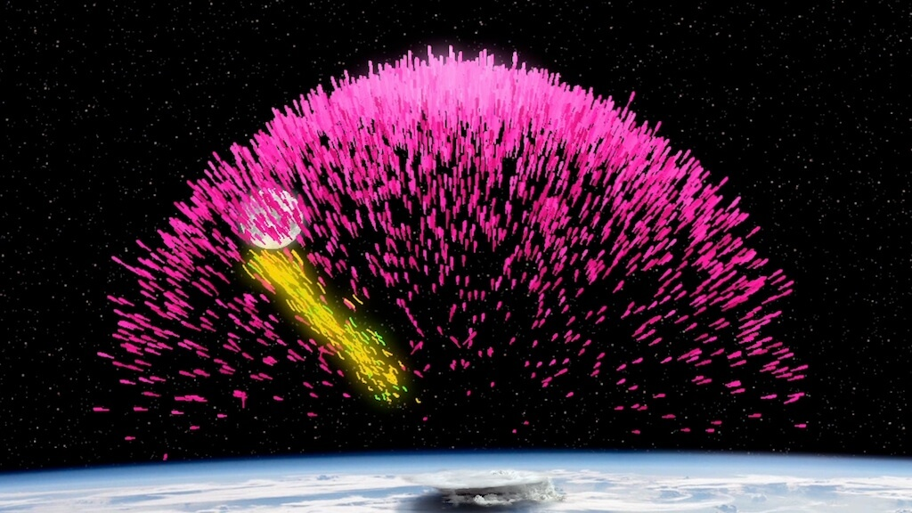

ဒါကို ဥပမာ ပြရရင် အီလက်ထရွန် (electron) ဆိုတဲ့ အမှုန်လေးကို လူတိုင်းနီးပါး ကြားဖူးကြ မှာပါ။ ဒီ အီလက်ထရွန် အမှုန်လေးဟာ အရွယ်အစား အလွန် သေးငယ်ပြီး သူ့ရဲ့ ဒြပ်ထုကလဲ အလွန် နည်းပါး ပါတယ်။ နောက်ပြီး သူ့မှာ လျှပ်စစ် အမဓါတ်ကို သယ်ဆောင် ထားပါတယ်။
ဒီ အီလက်ထရွန်ရဲ့ ဆန့်ကျင်ဖက် antimatter ကတော့ ပိုစစ်ထရွန် (positron) ပဲ ဖြစ်ပါတယ်။ ဒီ positron ဟာ အီလက်ထရွန် ဒြပ်မှုန်နဲ့ အရွယ်အစားတူ အလေးချိန်လဲ တူပါတယ်။ ဒါပေမယ့် positron ဟာ အီလက်ထရွန်လို အမဓါတ် မဆောင်ပဲ အဖိုဓါတ် ဆောင်နေပါတယ်။ တနည်းအားဖြင့် အဖိုဓါတ် ဆောင်တဲ့ အီလက်ထရွန် ဖြစ်ပါတယ်။
Antimatter တွေကို ဘယ်လို ရှာဖွေ တွေ့ရှိခဲ့တာလဲ
ဆန့်ကျင်ဒြပ် ဆိုတဲ့ အယူအဆကို စတင်ပြီး တင်ပြခဲ့တဲ့ သူကတော့ ကွမ်တမ် ရူပဗေဒ ရဲ့ ဖခင်ကြီးတွေ ထဲက တစ်ဦး ဖြစ်တဲ့ ပေါလ် ဒီရက် (Paul Dirac) ပဲ ဖြစ်ပါတယ်။ သူက ဒီ ဆန့်ကျင်ဒြပ် ဆိုတဲ့ အယူအဆကို တာကို ၁၉၂၈ ခုနှစ်မှာ အကြံပြု တင်ပြခဲ့တာ ဖြစ်ပါတယ်။သူက အဲ့သည် အချိန်က နာမည်ကျော်ကြားစ ပြုလာတဲ့ ကွမ်တမ် သီအိုရီနဲ့ အိုင်းစတိုင်းရဲ့ နှိုင်းရ သီအိုရီ တွေကို ပေါင်းစပ်ဖို့ ကြိုးစား ခဲ့ရင်း antimatter ဆိုတဲ့ အယူအဆကို စတင် တွေ့ရှိခဲ့တာ ဖြစ်ပါတယ်။
သူက ဒီ သီအိုရီ နှစ်ခုကို ဆက်စပ်ဖို့ ကြိုးစားရင်း အက်တမ်အောက် သေးတဲ့ အမှုန်လေးတွေ အလွန် လျင်မြန်တဲ့ အလျင်နဲ့ ရွေ့လျားလို့ ရှိရင် ဘယ်လို အပြောင်းအလဲ တွေ ဖြစ်လာလဲ ဆိုတာကို ပြောပြနိုင်တဲ့ အီကွေးရှင်း ကို ဖော်ထုတ် နိုင်ခဲ့ ပါတယ်။
သူ့ရဲ့ အီကွေးရှင်းကနေ တွက်လို့ ရလာတဲ့ အဖြေကို ကြည့်ပြီး အီလက်ထရွန် နဲ့ ဒြပ်ထုတူ၊ လည်ရာဘက် (spin) တူ ပြီး အဖို လျှပ်စစ်ဓါတ် ဆောင်တဲ့ အမှုန် ရှိလိမ့်မယ်လို့ ဟောကိန်း ထုတ်ခဲ့ပါတယ်။
သူ့ ဒီလို ဟောကိန်း ထုတ်ပြီး နှစ်အနည်းငယ် အကြာမှာတော့ ရူပဗေဒ ပညာရှင် တွေဟာ သူ ဟောကိန်း ထုတ်ခဲ့တဲ့ အီလက်ထရွန်ရဲ့ ဆန့်ကျင်ဖက် antimatter ကို ပထမဆုံး ရှာဖွေ တွေ့ရှိခဲ့ ကြပါတယ်။ ဒီ ရှာတွေ့တဲ့ အမှုန်ကို positron လို့ အမည်ပေးခဲ့ ကြပါတယ်။

Matter နဲ့ antimatter တိုက်မိရင် ဘာဖြစ်သွားမလဲ
ဒြပ်မှုန် နဲ့ သူ့ရဲ့ ဆန့်ကျင်ဒြပ်မှုန် နှစ်ခု တိုက်မိသွား ခဲ့ရင် (ဥပမာ electron နဲ့ positron နှစ်ခု တိုက်မိရင်) ဒီ အမှုန် နှစ်ခု စလုံး ပြိုကွဲပြီး ဂမ်မာ ရောင်ခြည် (gamma rays) တွေ ထွက်လာပါတယ်။ Gramm rays ဆိုတာ တနည်းအားဖြင့် စွမ်းအားမြင့် လျှပ်စစ်သံလိုက် လှိုင်း (electromagnetic waves) တွေ ဖြစ်ပါတယ်။ဒီလို matter နဲ့ antimatter တိုက်မိရင် စွမ်းအင်တွေ အများကြီး ထွက်လာတာမို့လဲ သိပ္ပံ ရုပ်ရှင်တွေ၊ ဝတ္ထုတွေ ထဲမှာဆို antimatter ကို အာကာသ ယာဉ်တွေ မောင်းနှင်တဲ့ လောင်ဆာ အနေနဲ့အသုံးပြုကြတာ ဖြစ်ပါတယ်။ အချို့ သိပ္ပံ ဝတ္ထုတွေ ထဲမှာဆို antimatter လက်နက်တွေတောင် ပါလိုက်သေးတယ်။
ဒါပေမယ့် လက်တွေ့မှာတော့ အာကာသ ယာဉ်တစ်စီးကို ကာလရှည်ကြာစွာ မောင်းနှင်နိုင်ဖို့ လိုအပ်တဲ့ ဆန့်ကျင်ဒြပ်တွေ ထုတ်လုပ် စုဆောင်းဖို့ ဆိုတာက စာရွက်ပေါ်မှာလောက် မလွယ်ကူ ပါဘူး။
ဥပမာ ပြောရရင် လက်ရှိ ကမ္ဘာ့ အကြီးဆုံး particle accelerators တွေထဲက တစ်ခု အပါအဝင် ဖြစ်တဲ့ CERN particular accelerator ကြီးထဲမှာ ဆန့်ကျင်ဒြပ် တစ် ဂရမ် လောက်စုဆောင်းမိ ဖို့ ဆိုတာတောင် နှစ် ဘီလီယံ ပေါင်း ၁၀၀ လောက် ကြာလိမ့်မယ်လို့ ဆိုပါတယ်။
ဘာ့ကြောင့် ဆန့်ကျင်ဒြပ်ဟာ အရမ်းရှားပါးရတာလဲ
ဒါဆို ဘာ့ကြောင့် antimatter ဟာ အလွန်ရှားပါး ရတာလဲ။တကယ်တော့ ဆန့်ကျင်ဒြပ် ဆိုတာက သိပ်ပြီးတော့ ထူးဆန်းနေတဲ့ အရာ တစ်ခုတော့ မဟုတ်ပါဘူး။ ပြောရရင် matter ရော antimatter ရော နှစ်မျိုး လုံးဟာ စကြာဝဠာ ထဲမှာ ညီတူညီမျှ ပမာဏ ရှိနေသင့်တဲ့ အရာတွေပါ။
စကြာဝဠာ ပေါ်စ ကတဲက matter ရော antimatter ရော နှစ်မျိုးလုံး ပမာဏ ညီတူ ညီမျှ ဖြစ်လာခဲ့ကြတာပါ။ ဒါပေမယ့် ဒီနေ့ ကြည့်လိုက်ရင် စကြာဝဠာ ထဲမှာ matter တွေကသာ လွှမ်းမိုးနေပြီး antimatter ကတော့ မတွေ့ရ လောက်အောင် အလွန်ကို ရှားပါးပါတယ်။
အခုလို antimatter တွေ ဘာ့ကြောင့် ရှားပါး ရလဲ ဆိုတဲ့ မေးခွန်းနဲ့ ပါတ်သက်လို့တော့ သိပ္ပံ ပညာရှင်တွေ အနေနဲ့ ကျေနပ်လောက်တဲ့ အဖြေ ပေးနိုင်စွမ်း မရှိသေး ဘူးလို့ သိရပါတယ်။
Reference: What Is Antimatter? | Science Alert